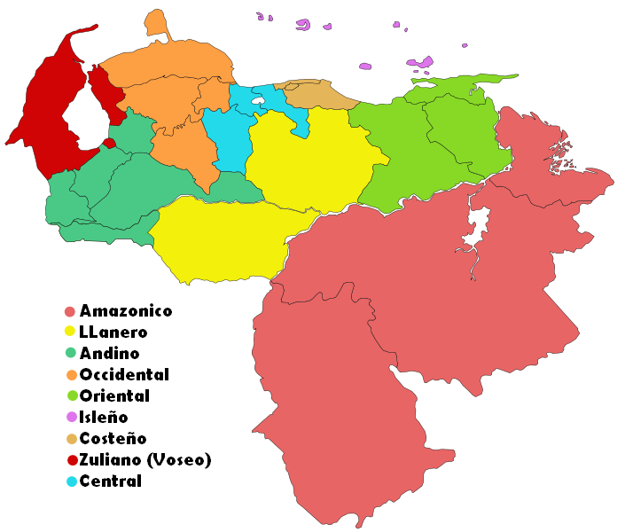
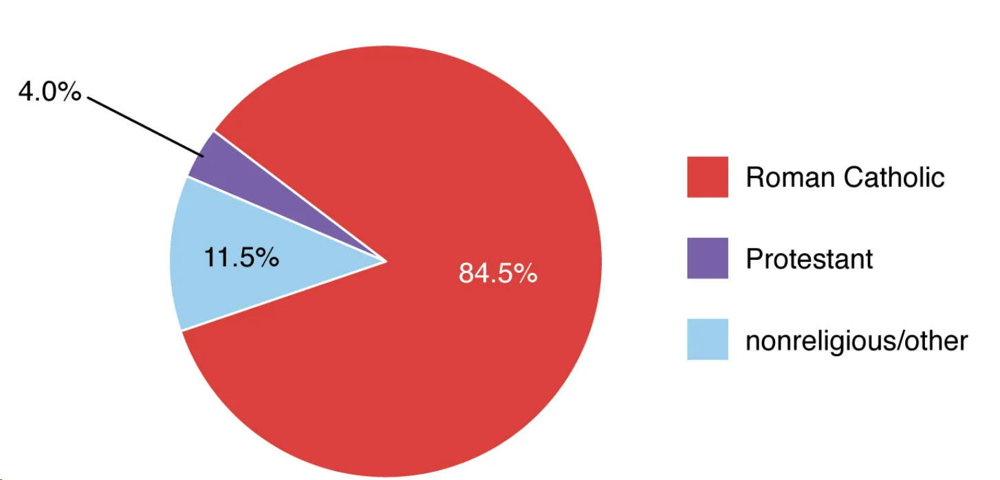

| Quick Facts | Home | Pictures | Information |
Language and Religions
| The majority of the more
than 25 languages spoken by the indigenous communities are members of
the Cariban, Arawakan, and Chibchan linguistic families. The majority
speaks Spanish as their national language. Venezuelan Spanish differs
from other Latin American and Iberian dialects via the use of regional
idioms, colloquial expressions, and reduced verb tenses. English is frequently preferred in corporate communications in Caracas and other large commercial areas, and multilingual education is encouraged in Caracas' premium schools. English is becoming the most widely spoken second language in the nation due to the large population of English-speaking professionals in the major cities and oil hubs. |
 |
|  | The Venezuelan constitution guarantees
religious freedom, despite the fact that the great majority of people
there are at least nominal Roman Catholics. Most people show tolerance
for other religions. The majority of the minority is made up of various
Protestant sects, with smaller populations of Muslims and Jews. While many indigenous peoples, particularly those living in towns centred on riverbank mission posts, have converted to Catholicism, some still follow their ancestral beliefs. Although the Roman Catholic Church is officially nonpartisan, a large number of its priests and bishops have taken an active role in politics, either by supporting radical or liberal government policies or by advocating for socioeconomic changes and liberation theology. |
| Page 1 | Page 2 | Page 3 | Page 4 | Page 5 | Page 6 | Page 7 |